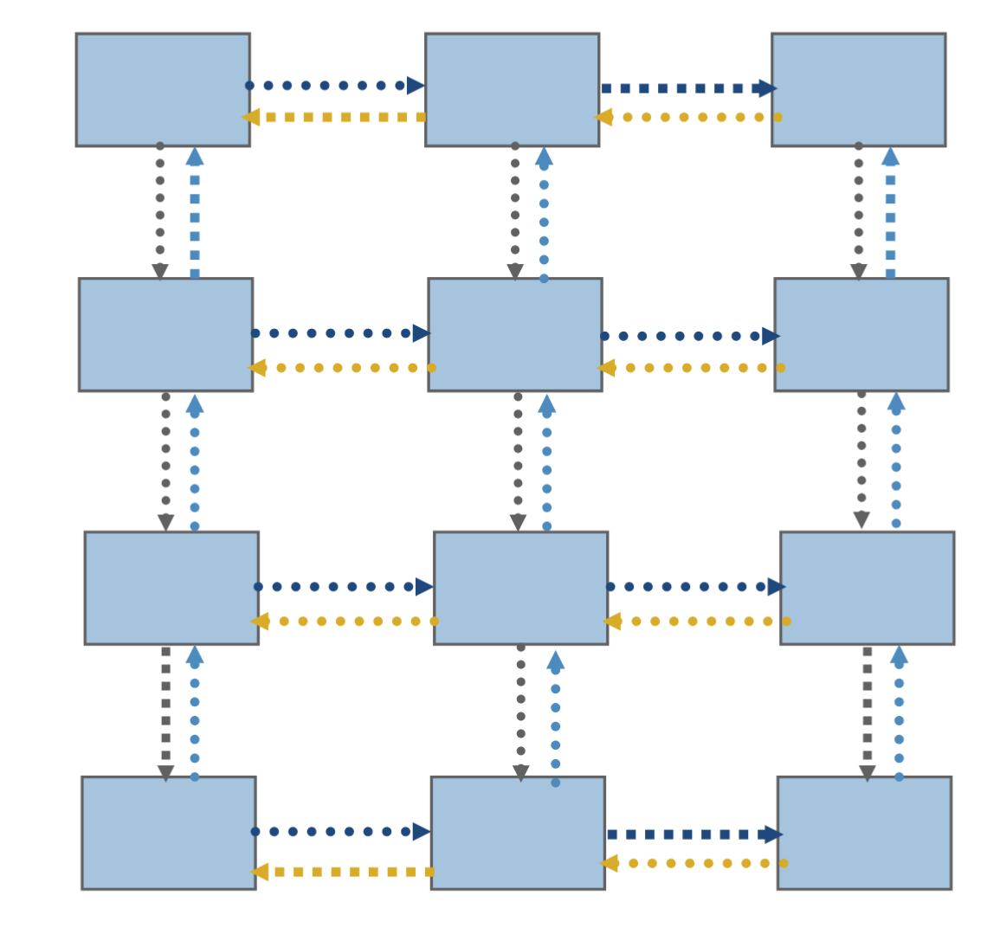

18) Introduction to MPI#
Last time:
Parallel reductions and scans
Graphs
Today:
1. Processes and Threads#
Threads and processes are indeed very similar.
Similarities:
Both created via
clonesystem call on Linux.cloneallows the child process to share parts of its execution context with the calling process, such as the memory space, the table of file descriptors, and the table of signal handlers.The main use of
clone()is to implement threads: multiple threads of control in a program that run concurrently in a shared memory space.Threads and processes are scheduled in the same way by the operating system
They have separate stacks (automatic variables)
They have access to same memory before
fork()orclone().
But some important distinctions:
Threads set
CLONE_VM: which means the calling process and the child process run in the same memory space. In particular, memory writes performed by the calling process or by the child process are also visible in the other process.Threads share the same virtual-to-physical address mapping.
Threads can access the same data at the same addresses;
privatedata is private only because other threads don’t know its address.Threads set
CLONE_FILES(which means the calling process and the child process share the same file descriptor table).Threads set
CLONE_THREAD(hence, the child is placed in the same thread group as the calling process. ) andCLONE_SIGHAND(the calling process and the child process share the same table of signal handlers)Process id and signal handlers are shared
Myths about processes#
Processes can’t share memory
Not true. See:
mmap(),shm_open(), andMPI_Win_allocate_shared()
Processes are “heavy”
They actually share same data structures and kernel scheduling; no difference in context switching
Startup costs: ~100 microseconds to duplicate page tables
Caches are physically tagged; processes can share L1 cache
2. MPI: Message Passing Interface#
Just a library: you will find it in your plain C, C++, or Fortran compiler (just like OpenMP)
Two active open source library implementations: MPICH and Open MPI
Numerous vendor implementations modify/extend these open source implementations
MVAPICH is an MPICH-derived open source implementation for InfiniBand and related networks
Bindings from many other languages; for instance, mpi4py is popular for Python and MPI.jl for Julia
Scales to millions of processes across ~100k nodes
Shared memory systems can be scaled up to ~4000 cores, but latency and price ($) increase
Standard usage: processes are separate on startup
Timeline
MPI-1 (1994) point-to-point messaging, collectives
MPI-2 (1997) parallel IO, dynamic processes, one-sided
MPI-3 (2012) nonblocking collectives, neighborhood collectives, improved one-sided
Let’s see our very fist C example that uses MPI API functions. You can find this code in c_codes/module5-2/mpi-demo.c.
1#include <mpi.h>
2#include <stdio.h>
3
4int main(int argc, char **argv) {
5 MPI_Init(&argc, &argv); // Must call before any other MPI functions
6 int size, rank, sum;
7 MPI_Comm_rank(MPI_COMM_WORLD, &rank);
8 MPI_Comm_size(MPI_COMM_WORLD, &size);
9 MPI_Allreduce(&rank, &sum, 1, MPI_INT, MPI_SUM, MPI_COMM_WORLD); // performs the sum of the first n-1 integers
10 printf("I am rank %d of %d: sum=%d\n", rank, size, sum);
11 return MPI_Finalize();
12}
This may remind you of the top-level OpenMP strategy
int main() {
#pragma omp parallel
{
int rank = omp_get_thread_num();
int size = omp_get_num_threads();
// your code
}
}
We use the compiler wrapper
mpicc, but it just passes some flags to the real compiler.
! mpicc -show
gcc -I/usr/local/include -pthread -L/usr/local/lib -Wl,-rpath -Wl,/usr/local/lib -Wl,--enable-new-dtags -lmpi
! mpicc -Wall ../c_codes/module5-2/mpi-demo.c -o mpi-demo
To execute:
We use
mpiexecto run locally. Clusters/supercomputers often have different job launching programs (such assrunormpirun).
! mpiexec -n 2 ./mpi-demo
I am rank 1 of 2: sum=1
I am rank 0 of 2: sum=1
In MPI terminology,
ranksis the same as processesWe can run more MPI processes than cores (or hardware threads), but you might need to use the
--oversubscribeoption because oversubscription is usually expensive.
! mpiexec -n 6 --oversubscribe ./mpi-demo
I am rank 0 of 6: sum=15
I am rank 1 of 6: sum=15
I am rank 2 of 6: sum=15
I am rank 3 of 6: sum=15
I am rank 4 of 6: sum=15
I am rank 5 of 6: sum=15
You can use OpenMP within ranks of MPI (but use
MPI_Init_thread()in your program)Everything is private by default
Advice from Bill Gropp:#
You want to think about how you decompose your data structures, how you think about them globally. […] If you were building a house, you’d start with a set of blueprints that give you a picture of what the whole house looks like. You wouldn’t start with a bunch of tiles and say. “Well I’ll put this tile down on the ground, and then I’ll find a tile to go next to it.” But all too many people try to build their parallel programs by creating the smallest possible tiles and then trying to have the structure of their code emerge from the chaos of all these little pieces. You have to have an organizing principle if you’re going to survive making your code parallel.
2.1 Communicators#
MPI_COMM_WORLDcontains all ranks in thempiexec. Those ranks may be on different nodes, even in different parts of the world.MPI_COMM_SELFcontains only one rankCan create new communicators from existing ones
int MPI_Comm_dup(MPI_Comm comm, MPI_Comm *newcomm); // To duplicate
int MPI_Comm_split(MPI_Comm comm, int color, int key, MPI_Comm *newcomm); // can split based on colors and keys
int MPI_Comm_create(MPI_Comm comm, MPI_Group group, MPI_Comm *newcomm); // Creates a new communicator
Can spawn new processes (but not supported on all machines)
int MPI_Comm_spawn(const char *command, char *argv[], int maxprocs,
MPI_Info info, int root, MPI_Comm comm,
MPI_Comm *intercomm, int array_of_errcodes[]);
Can attach attributes to communicators (useful for library composition)
Collective operations#
MPI has a rich set of collective operations scoped by communicator, including the following.
int MPI_Reduce(const void *sendbuf, void *recvbuf, int count,
MPI_Datatype datatype, MPI_Op op, int root, MPI_Comm comm); // Reduces values on all processes to a single value
int MPI_Allreduce(const void *sendbuf, void *recvbuf, int count,
MPI_Datatype datatype, MPI_Op op, MPI_Comm comm); // Combines values from all processes and distributes the result back to all processes
int MPI_Scan(const void *sendbuf, void *recvbuf, int count,
MPI_Datatype datatype, MPI_Op op, MPI_Comm comm); // is an inclusive scan: it performs a prefix reduction across all MPI processes in the given communicator
int MPI_Gather(const void *sendbuf, int sendcount, MPI_Datatype sendtype,
void *recvbuf, int recvcount, MPI_Datatype recvtype, int root, MPI_Comm comm); // Gathers together values from a group of processes
int MPI_Scatter(const void *sendbuf, int sendcount, MPI_Datatype sendtype,
void *recvbuf, int recvcount, MPI_Datatype recvtype, int root, MPI_Comm comm); // Sends data from one process to all other processes in a communicator
In details:
MPI_Reduceis the means by which MPI process can apply a reduction calculation. The values sent by the MPI processes will be combined using the reduction operation given and the result will be stored on the MPI process specified as root.MPI_Reduceis a collective operation; it must be called by every MPI process in the communicator given.MPI_Allreduceis the means by which MPI process can apply a reduction calculation and make the reduction result available to all MPI processes involved. It can be seen as a combination of anMPI_ReduceandMPI_Broadcast.MPI_Allreduceis a collective operation; it must be called by every MPI process in the communicator given.MPI_Scanis an inclusive scan: it performs a prefix reduction across all MPI processes in the given communicator. In other words, each MPI process receives the result of the reduction operation on the values passed by that MPI process and all MPI processes with a lower rank.MPI_Scanis a collective operation; it must be called by all MPI processes in the communicator concerned.MPI_Gathercollects data from all processes in a given communicator and concatenates them in the given buffer on the specified process. The concatenation order follows that of the ranks. This is a collective operation; all processes in the communicator must invoke this routine.MPI_Scatterdispatches data from a process across all processes in the same communicator. As a blocking operation, the buffer passed can be safely reused as soon as the routine returns. Also, MPI_Scatter is a collective operation; all processes in the communicator must invoke this routine.Implementations are optimized by vendors for their custom networks, and can be very fast.
Plot from Paul Fischer, researcher at Argonne National Labb and Professor at UIUC:

Notice how the time is basically independent of the number of processes \(P\), and only a small multiple of the cost to send a single message. Not all networks are this good.
Point-to-point messaging#
In addition to collectives, MPI supports messaging directly between individual ranks.

In the above sketch, MPI_Isend and MPI_Irecv are non-blocking. The “I” stands for “with Immediate return”; it does not block until the message is received. In fact:
Interfaces can be:
blocking like
MPI_Send()andMPI_Recv(), or“immediate” (asynchronous), like
MPI_Isend()andMPI_Irecv(). The immediate varliants return anMPI_Request, which must be waited on to complete the send or receive.
Be careful of deadlock when using blocking interfaces.
I never use blocking send/recv.
There are also “synchronous”
MPI_Ssendand “buffered”MPI_Bsend, and nonblocking variants of these,MPI_Issend, etc.
Point-to-point messaging is like the assembly of parallel computing
It can be good for building libraries, but it’s a headache to use directly for most purposes
Better to use collectives when possible, or higher level libraries
Neighbors#
A common pattern involves communicating with neighbors, often many times in sequence (such as each iteration or time step).

This can be achieved with
Point-to-point communication:
MPI_Isend,MPI_Irecv,MPI_WaitallPersistent:
MPI_Send_init(once),MPI_Startall,MPI_Waitall.Neighborhood collectives (need to create special communicator)
One-sided (need to manage safety yourself)